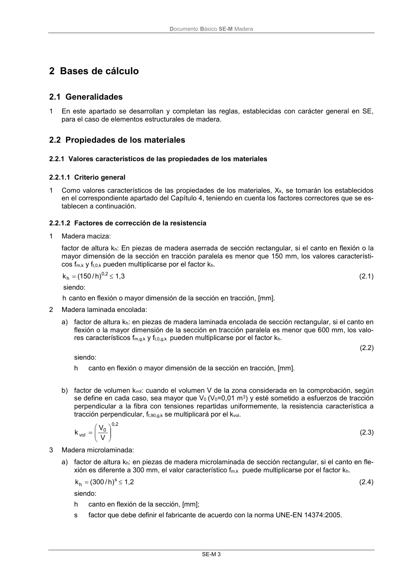

DB-SE-M Madera · edición 2019-12-20 · capa oficial
Documento DB-SE-M-oficial · SHA-256 del PDF 26b5819839ebfda78b0b119c5e76a0a37773b0d763c05688541870075df93718
Copia fiel del PDF fuente · Fuente oficial
Ficha de la disposición en la fuente oficial
Formatos: JSON del segmento · Markdown
1.2 Condiciones particulares para el cumplimiento del DB-SE-M 1 La aplicación de los procedimientos de este DB se llevará a cabo de acuerdo con las condiciones particulares que en el mismo se establecen, con las condiciones particulares indicadas en el DB-SE y con las condiciones generales para el cumplimiento del CTE, las condiciones del proyecto, las con- diciones en la ejecución de las obras y las condiciones del edificio que figuran en los artículos 5, 6, 7 y 8 respectivamente de la parte I del CTE. DocumentoBásico SE-M Madera SE-M 3
